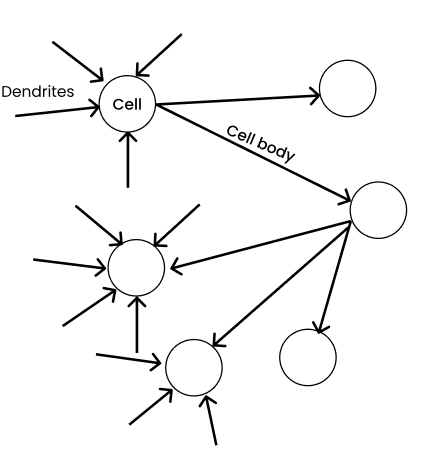
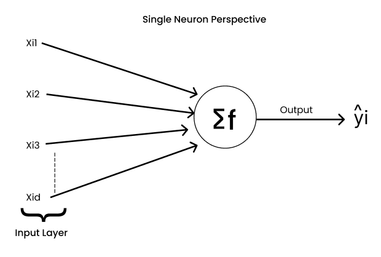
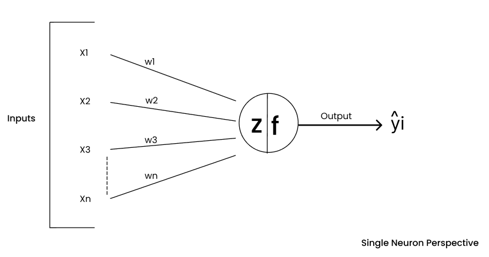
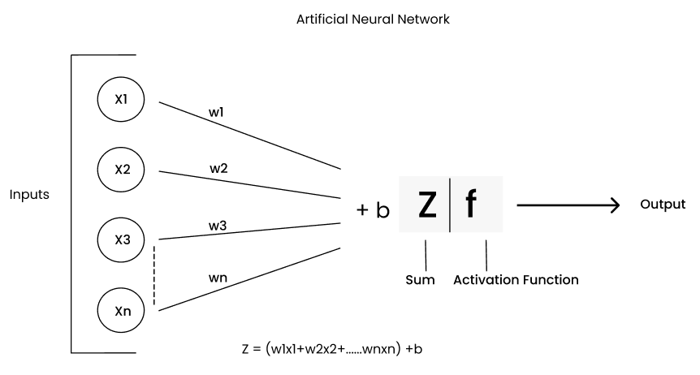
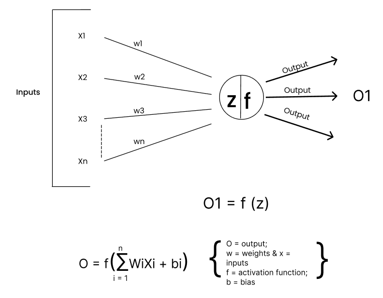
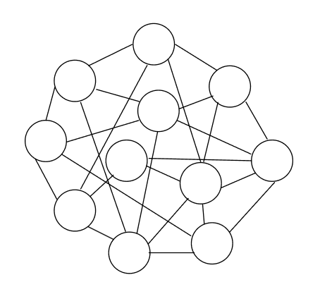
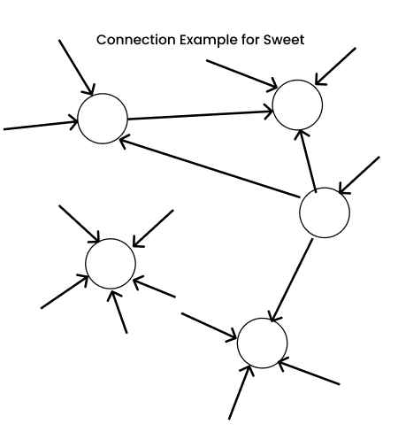
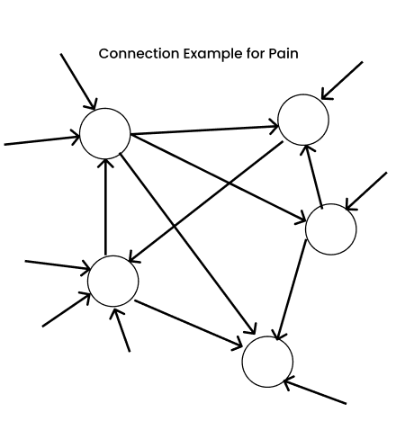

06 · Deep Learning
Biological neuron vs artificial neuron
How a single brain cell inspired the artificial neuron, where the analogy holds, and where it stops. Everything after this page, including MLPs, CNNs and Transformers, is built from the unit described here.
The biological neuron
A biological neuron has four parts that matter for this story:
- Dendrites receive signals from other neurons.
- The cell body (with its nucleus) combines those signals.
- If the combined signal is strong enough, the neuron fires.
- The axon and its terminals carry the output to other neurons.
Not every connection counts equally. Some connections are stronger than others, so their signals carry more weight. The blog pictures this as thicker dendrites carrying more important information.

The artificial neuron
The artificial neuron keeps exactly those ideas and turns them into arithmetic:


- Multiply each input by its weight.
- Sum them and add a bias:
z = w₁x₁ + … + wₙxₙ + b. - Activate: apply a function
fto decide the output.

Mapping one onto the other
| Biological neuron | Artificial neuron | In PyTorch |
|---|---|---|
| Signals arriving at the dendrites | Inputs x₁ … xₙ | a row of the input tensor |
| Strength of each connection ("thicker dendrite") | Weights w₁ … wₙ | nn.Linear(...).weight |
| Cell body combining the signals | Weighted sum plus bias z = w·x + b | x @ W.T + b |
| Fires only if the input is strong enough | Activation function f(z) | nn.ReLU(), torch.sigmoid |
| Axon sends the pulse to other neurons | Output becomes the next layer's input | the next nn.Linear |
| Learning strengthens or weakens connections | Training adjusts the weights | loss.backward(); optimizer.step() |

To fire or not to fire
A biological neuron is electrochemical: if it gets enough input it fires, and if not it stays quiet. The artificial version of this decision is the activation function. The perceptron used a hard step (fire = 1, otherwise 0). Modern networks use smooth or piecewise functions such as sigmoid and ReLU, because training needs useful gradients.
Try it · one artificial neuron
Line thickness shows |weight|, the "thicker dendrite" idea. Blue lines are positive weights and orange lines are negative.
How biological networks grow
A neural network is nothing more than neurons connected to each other. In the brain, those connections are built up by experience.

- At birth we have relatively few connections in the cerebral cortex.
- By about age six, after years of sensory, language, speech, vision and hearing experience, connections have multiplied. That is an enormous amount of training data.
- In the teenage years the brain prunes connections it does not use (synaptic pruning). More connections cost more energy to maintain, so useful ones are kept and strengthened.
The cerebral cortex handles planning, decision-making, problem-solving, movement, language and impulse control, so these connections shape almost everything we do.
Experiences become weighted connections
Different experiences build different pathways, each with its own weights. Tasting candy for the first time and touching a hot surface strengthen two very different sets of connections:


Biological learning is weighted connections. Artificial learning is the same thing in numbers: training changes the weights so that the right inputs activate the right paths. Keep this picture in mind for the next pages. In an MLP, different inputs (a "3" vs a "7") light up different weighted paths through the hidden layers.
Where the analogy stops
The artificial neuron is roughly inspired by biology, not a copy of it:
| Brain | Artificial network | |
|---|---|---|
| Scale | About 86 billion neurons and on the order of 100 trillion synapses | The MNIST MLP: 202 neurons, 109,386 weights |
| Signals | Spikes in time, electrochemical | Real numbers, computed layer by layer |
| Learning rule | Local changes at synapses, still being researched | Backpropagation of a global error |
| Energy | About 20 watts | Hundreds of watts per GPU for large models |
Biology gave us the starting intuition. The engineering since then (activation choices, initialization, optimizers, normalization) has been driven by mathematics and experiments, not by copying the brain more closely.